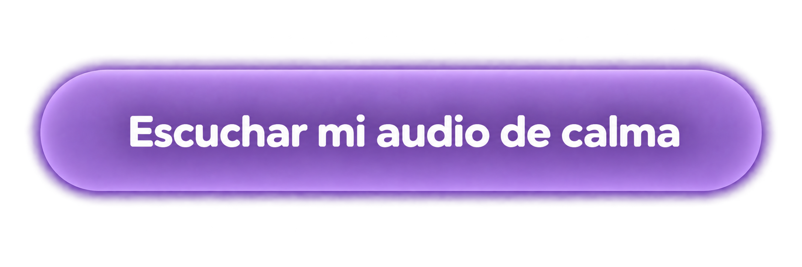

♧
Está bien sentir
un montón de cosas.
No hay emociones correctas o incorrectas. Todo lo que sentís es válido.
UN MOMENTO PARA VOS
Preparé este audio de calma para acompañarte en este momento. No necesitás resolver nada. Solo buscá un lugar tranquilo, ponete cómoda y permitite hacer una pausa.

🎧 Un momento de calma, solo para vos
TU MOMENTO
Una guía suave para ayudarte a bajar el ruido, conectar con tu respiración y sentir un poco más de tranquilidad en medio de tantas emociones.
Podés escucharlo las veces que quieras,
cuando lo necesites.
No hay emociones correctas o incorrectas. Todo lo que sentís es válido.
Muchas mamás están atravesando lo mismo que vos.
Cuidar de tu bienestar emocional te da fuerzas para acompañar a tu hijo/a.
No tenés que tener todas las respuestas hoy. Solo necesitás estar, respirar y permitirte sentir.